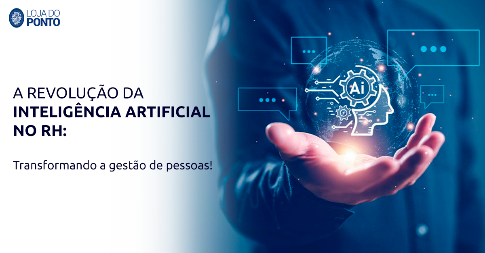
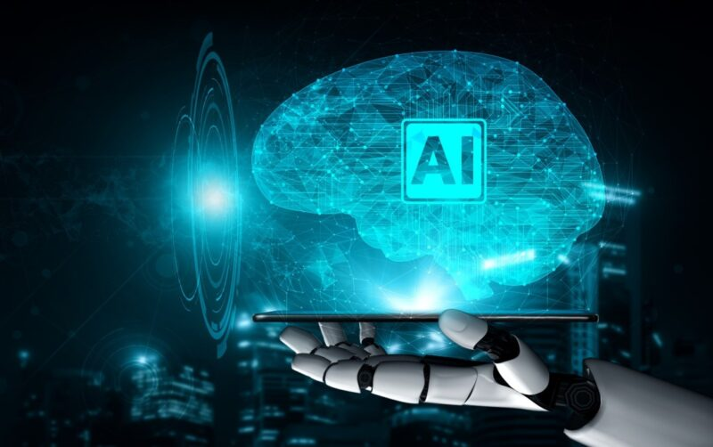

A Revolução da inteligencia Artificial
Nos últimos anos, a Inteligência Artificial (IA) tem se destacado como uma das tecnologias mais transformadoras e inovadoras da era digital. Desde o desenvolvimento de algoritmos sofisticados até a aplicação prática em diversos setores, a IA está moldando o futuro de uma maneira sem precedentes. Neste artigo, vamos explorar como a IA está revolucionando a tecnologia e o impacto que ela está causando em nossas vidas.
O que é Inteligencia Artificial
.jpg)
Inteligência Artificial refere-se à capacidade das máquinas de realizar tarefas que, tradicionalmente, requerem inteligência humana. Isso inclui a capacidade de aprender, raciocinar, resolver problemas e entender linguagem natural. A IA pode ser categorizada em duas principais áreas: IA estreita (ou fraca) e IA geral (ou forte). A IA estreita é projetada para realizar tarefas específicas, como reconhecimento de voz ou recomendações de produtos, enquanto a IA geral visa possuir uma inteligência comparável à humana, capaz de realizar qualquer tarefa cognitiva.
Aplicações praticas da IA
A IA está presente em muitas áreas do nosso cotidiano, muitas vezes de maneiras que podem passar despercebidas. Aqui estão algumas das principais aplicações:
-
Assistentes Virtuais: Siri, Alexa e Google Assistant são exemplos de assistentes virtuais que utilizam IA para entender comandos de voz e realizar tarefas, como tocar música, definir lembretes e responder perguntas.
-
reconhecimento de imagem e videos:Tecnologias de IA estão aprimorando a forma como identificamos e analisamos imagens e vídeos. Isso é crucial em setores como segurança, saúde e mídia social.
-
recomendações Personalizadas:Plataformas como Netflix e Amazon usam IA para analisar nossos comportamentos e preferências, oferecendo recomendações personalizadas que melhoram a experiência do usuário.
-
Saúde e Diagnostico:A IA está transformando a medicina ao ajudar no diagnóstico de doenças, análise de imagens médicas e desenvolvimento de novos tratamentos com maior precisão e velocidade.
-
Automação e Robotica: Desde fábricas até nossas casas, a automação impulsionada por IA está otimização de processos e tarefas, aumentando a eficiência e reduzindo custos.
Dasafio e Considerações Éticas
Embora a IA ofereça muitos benefícios, também apresenta desafios e questões éticas que precisam ser abordados. A privacidade dos dados é uma preocupação significativa, pois os sistemas de IA frequentemente coletam e analisam grandes quantidades de informações pessoais. Além disso, o impacto da automação no emprego e a potencial criação de sistemas de IA com viés são questões que requerem atenção cuidadosa.
O Futuro da IA
A Inteligência Artificial está transformando a tecnologia e a maneira como vivemos, trabalhamos e interagimos. Com suas aplicações cada vez mais sofisticadas e impactantes, a IA não é apenas uma tendência passageira, mas sim uma força revolucionária que está moldando o futuro. À medida que avançamos, é crucial estar ciente tanto dos benefícios quanto dos desafios associados a essa tecnologia para garantir um futuro em que a IA possa ser utilizada de forma ética e benéfica para todos.
Veja também
Como séra o Futuro da ProgramaçãoA Revolução da Telemedicina